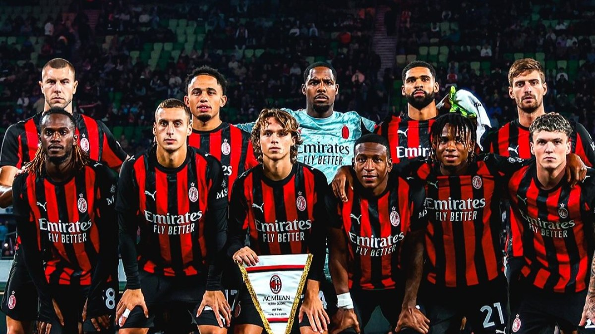

Uno de los clubes más grandes del fútbol mundial

La historia del AC Milan comienza en 1899 en la ciudad de Milan, cuando fue fundado por un grupo de ingleses e italianos liderados por Herbert Kilpin. Su nombre original fue Milan Foot-Ball and Cricket Club. Desde sus inicios, el club adoptó los colores rojo y negro, que simbolizan “el fuego de los demonios y el miedo de los rivales”.
El club rápidamente se convirtió en uno de los equipos más importantes de Italy. A lo largo de su historia ha ganado numerosos títulos nacionales e internacionales, convirtiéndose en uno de los clubes más exitosos del mundo. Entre sus logros destacan múltiples campeonatos de la Serie A, Copas de Italia y varias Champions League.
Durante las décadas de 1980 y 1990, el AC Milan vivió una de sus mejores épocas bajo la presidencia de Silvio Berlusconi y con entrenadores como Arrigo Sacchi y Fabio Capello. En esos años el equipo contó con grandes figuras como Paolo Maldini, Marco van Basten, Franco Baresi y Ruud Gullit.
En los años 2000 el club volvió a dominar Europa con jugadores legendarios como Kaká, Andrea Pirlo, Clarence Seedorf y Andriy Shevchenko. Uno de sus momentos más recordados fue ganar la UEFA Champions League en 2007.
Leyenda histórica del club.
Balón de Oro y campeón europeo.
Uno de los mejores goleadores.
| Entrenador | Nacionalidad | Periodo | Logros |
|---|---|---|---|
| Arrigo Sacchi | Italia | 1987 - 1991 | 2 Champions League |
| Fabio Capello | Italia | 1991 - 1996 | 4 Serie A |
| Carlo Ancelotti | Italia | 2001 - 2009 | 2 Champions League |
| Competencia | Cantidad de títulos |
|---|---|
| Serie A | 19 |
| Champions League | 7 |
| Copa Italia | 5 |
| Supercopa de Italia | 7 |
| Mundial de Clubes | 1 |